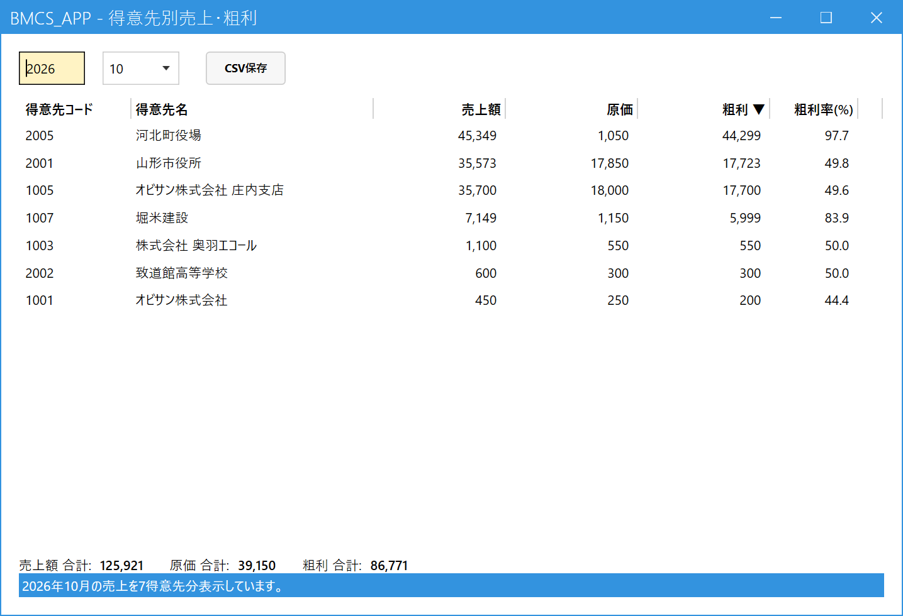
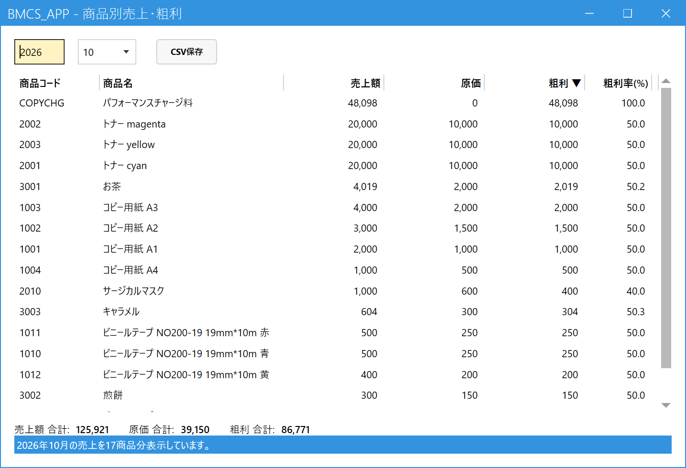
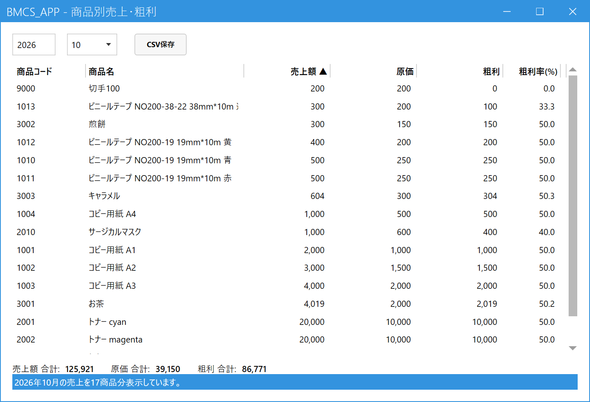

得意先別・商品別の売上・粗利を見る
こんなときに使います
「今月、どのお客様に、あるいはどの商品が、いくら売れて利益が出たか」を確認します。
月ごとに、売上額・原価・粗利・粗利率が出ます。見るだけの画面で、データは変わりません。
「今月、どのお客様に、あるいはどの商品が、いくら売れて利益が出たか」を確認します。
月ごとに、売上額・原価・粗利・粗利率が出ます。見るだけの画面で、データは変わりません。
1.月を選んで表示する
メインメニューの「分析」の中の、見たいほうを開きます。
| メニュー | 集計の単位 |
|---|---|
| 得意先別売上・粗利 | 売上伝票の得意先ごと。得意先コード順に出ます。 |
| 商品別売上・粗利 | 売上の明細の商品ごと。商品コード順に出ます。 |
開くと今月の集計が表示されます。ほかの月を見るときは、左上の年（4桁）と月の欄を変えると、すぐに表示し直します。月次締めをしていない月でも見られます。画面の下に、全体の合計（売上額・原価・粗利）が出ます。

- 年・月：集計する月です。左が年（4桁）、右が月です。
- CSV保存：表示している一覧をCSVファイルに保存します（下の「並べ替えとCSV保存」参照）。
- 列の見出し：クリックすると、その列で並べ替えます。開いた直後は粗利の大きい順（見出しに「▼」が付いています）です。
- 得意先ごとの集計：得意先ごとの売上額・原価・粗利・粗利率が並びます。
- 合計：全得意先の売上額・原価・粗利の合計です。

- 商品ごとの集計：商品ごとの売上額・原価・粗利・粗利率が並びます。商品が多くて画面に収まらないときは、右端のスクロールバーで下へ送ります。ほかの部分（年・月、CSV保存、見出し、合計）は得意先別と同じです。
2.数字の見かた
担当者別の売上・粗利と同じです。
| 項目 | 意味 |
|---|---|
| 売上額 | その月の売上の税抜金額。返品・値引を差し引いた金額です。 |
| 原価 | 数量 × 原価単価 の合計。 |
| 粗利 | 売上額 − 原価。 |
| 粗利率(%) | 粗利 ÷ 売上額。売上額が0のときは空欄です。 |
3.並べ替えとCSV保存
- 並べ替え：列の見出しをクリックすると、その列の小さい順（▲）に並びます。もう一度クリックすると大きい順（▼）になります。開いた直後は粗利の大きい順です。
- CSV保存：「CSV保存」ボタンを押して保存先を決めると、画面に見えている並び順のままCSVファイルに保存できます。Excelで開けます。

- 並べ替えた列：見出しに「▲」（小さい順）または「▼」（大きい順）が付きます。
集計は、画面を開くたび（年・月を変えるたび）にその時点の売上から計算し直します。取り消した売上は含みません。
請求の集約（支店の売上を本社にまとめて請求する設定）があっても、得意先別では売上伝票の得意先のまま集計します（本社にまとめません）。